The Eleanor Peace Bailey
Workshop
Tulsa, Oklahoma 1999

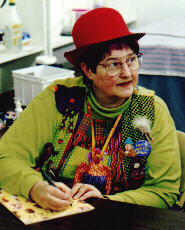
The Guest of Honor....elinor peace bailey.
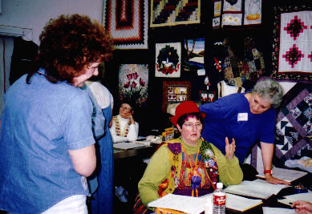
Naturally, we all hung on her every word.
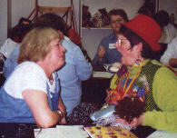
Every once in a while she could be seen trying to make her point a little more adamantly than usual.
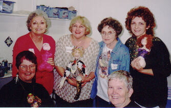
Devoted members of the class pose for a picture with elinor.
Top, left to right.....Patti, Genie, Jean and Anne-Marie
Bottom left....elinor and an unidentified fan
Results of the "Me, Myself and I" Workshop with elinor.....
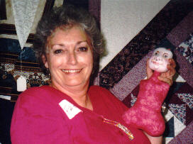Patti and her "Me, Myself and I",
under construction. Patti loves hot pink....can you tell?
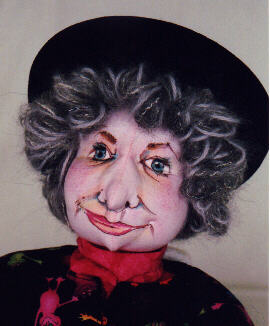A closeup of Patti's doll
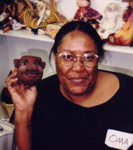Oma and her head (drawn by elinor)
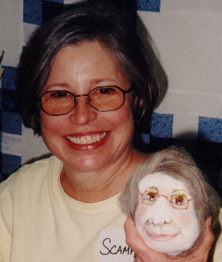Scampy and her head (drawn by elinor)
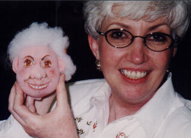A startling resemblance! Look at that
smile....
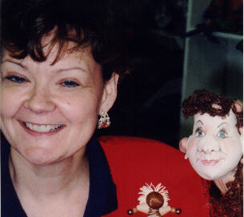Another wonderful likeness!
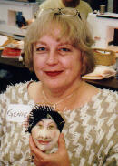Genie and her head (drawn by elinor)
Go see the other shows I've been to